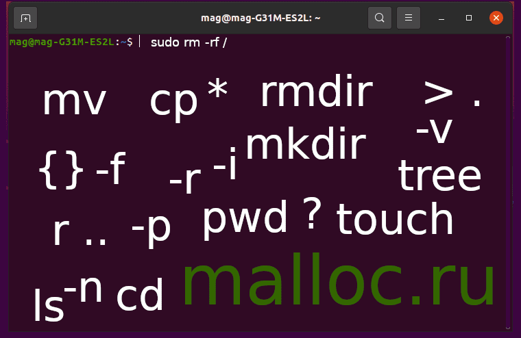

<!DOCTYPE html><html/><title>Linux - работа с каталогами и файлами. Часть Первая</title><meta http-equiv="content-type" content="text/html; charset=utf-8"/><meta name="description" content="Подробнее..."/><meta name="viewport" content="width=device-width, initial-scale=1"/><link rel="stylesheet" href="../../css/style.css"/><link rel="stylesheet" href="https://cdnjs.cloudflare.com/ajax/libs/font-awesome/4.7.0/css/font-awesome.min.css"/><script>document.oncontextmenu = cmenu; function cmenu(){ return false; }</script><!-- Body --><body lang="ru-RU" class="malloc-post"/><noscript/></noscript><!-- Navbar --><div class="malloc-top"/><div class="malloc-bar malloc-theme-main malloc-left-align malloc-large malloc-card"/><!-- Top bar --><a href="../../index.html" class="malloc-bar-item malloc-button malloc-hover-white"/>главная</a><a href="../../articles-1.html" class="malloc-bar-item malloc-button malloc-hover-white"/>статьи</a><a href="../../about.html" class="malloc-bar-item malloc-button malloc-hover-white"/>донат</a></div></div><!-- Main content: shift it to the right by 210-275 pixels when the sidebar is visible --><div class="malloc-main malloc-auto" style="margin-left:150px"/><!-- main{ --><div class="malloc-row malloc-padding-64"/><!-- text{ --><!-- Статья --><div class="malloc-threequarter malloc-padding"/><!-- { --><h1 class="malloc-center malloc-theme-main malloc-card malloc-auto malloc-cursive" style="border-radius:5px;">Linux - работа с каталогами и файлами. Часть Первая</h1><!-- Вступление --><p style="font-size: 14px" class="malloc-padding-small"/>Логически файл представляет собой место для хранения данных.<br/>Каталог это место хранения файлов и подкаталогов. Они организуются в иерархическом порядке от корневого (/) до многочисленных подкаталогов отделяемых друг от друга символом /.<br/>В этой статье покажу как создавать, удалять, копировать, перемещать, переименовывать каталоги, подкаталоги и файлы.<br/><br/>Команды, предоставленные в статье, использую сам. Все команды протестированы на Ubuntu.<br/>Посмотреть как это происходит в реальности можно на видео, которое находиться в конце статьи.</p><div class="malloc-auto" style="margin-top:40px; width:80.99999%; hight:80.99999%"/></div><!-- Подзаголовок 0 --><p class="malloc-padding-small"/><div class="malloc-padding-16"/></div><h2 class="malloc-text-teal">В каком каталоге сейчас нахожусь</h2><ul class="malloc-ul"/><div class="malloc-padding-small"/><li/>Чтобы узнать в каком каталоге мы сейчас находимся, введем команду:<br/><code class="malloc-text-teal malloc-border malloc-bar-item"/>pwd</code><br/>Увидем следующее: <b/>/home/USER</b><br/>На месте &quot;USER&quot; будет стоять <b/>текущее имя пользователя</b>.<br/>Например: <b/>/home/mag</b><p class="malloc-padding-small malloc-cursive malloc-border malloc-theme-l5" style="font-size:14px"/>&quot;pwd&quot; - вывести имя текущего / рабочего каталога</p></li></div></ul><div class="malloc-padding-16"/></div><h2 class="malloc-text-teal">Что находиться в каталоге</h2><ul class="malloc-ul"/><div class="malloc-padding-small"/><li/>Чтобы узнать, что находиться или лежит в каталоге, введем команду:<br/><code class="malloc-text-teal malloc-border malloc-bar-item"/>ls</code><p class="malloc-padding-small malloc-cursive malloc-border malloc-theme-l5" style="font-size:14px"/>&quot;ls&quot; - список содержимого каталога</p></li></div></ul><div class="malloc-padding-16"/></div><h2 class="malloc-text-teal">Создание каталога(ов)</h2><ul class="malloc-ul"/><div class="malloc-padding-small"/><li/>Чтобы создать каталог, введем команду:<br/><code class="malloc-text-teal malloc-border malloc-bar-item"/>mkdir test</code><br/>Мы создали при помощи команды &quot;mkdir&quot; каталог &quot;test&quot;<p class="malloc-padding-small malloc-cursive malloc-border malloc-theme-l5" style="font-size:14px"/>&quot;mkdir&quot; - это команда для создания новых директорий (каталогов)</p></li><br/><li/>Чтобы перемещаться между каталогами ипользуйте команду &quot;cd&quot;.<br/>Вход в каталог:<code class="malloc-text-teal malloc-border malloc-bar-item"/>cd test</code><br/>Выход из каталоги:<code class="malloc-text-teal malloc-border malloc-bar-item"/>cd ../</code><br/>Теперь снова зайдем в каталог &quot;test&quot;. В ней и будем выполнять все операции, которые описаны в статье.<p class="malloc-padding-small malloc-cursive malloc-border malloc-theme-l5" style="font-size:14px"/>&quot;cd&quot; - перемещение по каталогом<br/>&quot;../&quot; - подняться на один уровень</p></li><br/><li/>Чтобы создать в каталоге подкаталоги, нужен аргумент &quot;-p&quot;.<br/>Выглядит это так:<br/><code class="malloc-text-teal malloc-border malloc-bar-item"/>mkdir -p ./myDir/{music,video,pictures}</code><br/>Мы создали каталог &quot;myDir&quot; и в нем создали три подкаталога - &quot;music&quot;, &quot;video&quot;, &quot;pictures&quot;.<p class="malloc-padding-small malloc-cursive malloc-border malloc-theme-l5" style="font-size:14px"/>&quot;-p, --parents&quot; - позволяет создавать каталоги в родительском каталоге</p></li><br/><li/>Посмотрим, что находиться в каталоге &quot;test&quot;:<br/><code class="malloc-text-teal malloc-border malloc-bar-item"/>ls</code><br/>Мы видим, что тут лежит каталог &quot;myDir&quot;.<br/>Посмотрим, что находиться в ней:<br/><code class="malloc-text-teal malloc-border malloc-bar-item"/>ls myDir/</code><br/>Мы видим, что там есть три каталога - &quot;music&quot;, &quot;video&quot;, &quot;pictures&quot;.<p class="malloc-padding-small malloc-cursive malloc-border malloc-theme-l5" style="font-size:14px"/>&quot;ls&quot; - утилита Unix, которая печатает в стандартный вывод содержимое каталогов</p></li></div></ul><div class="malloc-padding-16"/></div><h2 class="malloc-text-teal">Удаление каталога(ов)</h2><ul class="malloc-ul"/><div class="malloc-padding-small"/><li/>1. Удалим пустой каталог &quot;music&quot;:<br/><code class="malloc-text-teal malloc-border malloc-bar-item"/>cd myDir</code><br/><code class="malloc-text-teal malloc-border malloc-bar-item"/>rmdir music</code><br/>Каталог &quot;music&quot; удален.<br/>Возвращаемся в каталог &quot;test&quot;<br><code class="malloc-text-teal malloc-border malloc-bar-item"/>cd ../</code><br/>2. Удалим пустой каталог &quot;pictures&quot;:<br/><code class="malloc-text-teal malloc-border malloc-bar-item"/>rmdir myDir/pictures</code><br/>Каталог &quot;pictures&quot; удален.<p class="malloc-padding-small malloc-cursive malloc-border malloc-theme-l5" style="font-size:14px"/>&quot;rmdir&quot; - удалить пустые каталоги</p></li><br/><li/>Удалить каталог &quot;myDir&quot; с подкаталогом &quot;video&quot; способом, который описан выше не получиться. Каталог &quot;myDir&quot; не является пустым каталогом.<br/>Чтобы удалить каталог &quot;myDir&quot; и вложенные в него подкаталоги, введем слудующее:<br/><code class="malloc-text-teal malloc-border malloc-bar-item"/>rm -r myDir</code><br/>Каталог &quot;myDir&quot; и все его подкаталоги удалены.<p class="malloc-padding-small malloc-cursive malloc-border malloc-theme-l5" style="font-size:14px"/>&quot;rm&quot; - удалить файлы или каталоги<br/>&quot;-r, -R, --recursive&quot; - рекурсивно удалять каталоги и их содержимое</p></li></div></ul><div class="malloc-padding-16"/></div><h2 class="malloc-text-teal">Создание файла(ов)</h2><ul class="malloc-ul"/><div class="malloc-padding-small"/><li/>Для создания пустого файла, я использую два способа.<br/>Первый при помощи &quot;touch&quot;:<br/><code class="malloc-text-teal malloc-border malloc-bar-item"/>touch first</code><br/>Второй при помощи &quot;>&quot;:<br/><code class="malloc-text-teal malloc-border malloc-bar-item"/>> second</code><p class="malloc-padding-small malloc-cursive malloc-border malloc-theme-l5" style="font-size:14px"/>&quot;touch&quot; - может использоваться для создания пустых файлов<br/>&quot;>&quot; - направить стандартный поток вывода в файл. Если файл не существует, он будет создан, если существует, то перезаписан сверху</p></li><br/><li/>Создание нескольких файлов на примере &quot;>&quot;:<br/><code class="malloc-text-teal malloc-border malloc-bar-item"/>> file-1 > file-2 > file-3</code><br/>Создание нескольких файлов на примере &quot;touch&quot;:<br/><code class="malloc-text-teal malloc-border malloc-bar-item"/>touch file-4 file-5 file-6</code><br/>Или так:<br/><code class="malloc-text-teal malloc-border malloc-bar-item"/>touch file-{7..12}</code><p class="malloc-padding-small malloc-cursive malloc-border malloc-theme-l5" style="font-size:14px"/>&quot;{}&quot; - фигруные скобки нужны для создания нескольких файлов. Между началои и канцом поледовательности ставиться две точки</p></li></div></ul><div class="malloc-padding-16"/></div><h2 class="malloc-text-teal">Удаление файла(ов)</h2><ul class="malloc-ul"/><div class="malloc-padding-small"/><li/>Удаление файла:<br/><code class="malloc-text-teal malloc-border malloc-bar-item"/>rm file-6</code></li><br/><li/>Удалить файлы имеющих различие в определенной месте:<br/><code class="malloc-text-teal malloc-border malloc-bar-item"/>rm file-1?</code><br/>Удалены файлы: &quot;file-10&quot;, &quot;file-11&quot;, &quot;file-12&quot;.<p class="malloc-padding-small malloc-cursive malloc-border malloc-theme-l5" style="font-size:14px"/>&quot;?&quot; - означает любой один символ</p></li><br/><li/>Чтобы удалить все файлы начинающие на символ &quot;f&quot;:<br/><code class="malloc-text-teal malloc-border malloc-bar-item"/>rm f*</code><br/>В данном случае, удалены файлы &quot;file-1&quot;, &quot;file-2&quot;, ... , &quot;file-5&quot;, &quot;first&quot;.<p class="malloc-padding-small malloc-cursive malloc-border malloc-theme-l5" style="font-size:14px"/>&quot;*&quot; - означает любой символ в любом количестве</p></li><br/><li/>Конечно можно удалить файлы имеющие общий конец.<br/>Создадим девять файлов:<br/><code class="malloc-text-teal malloc-border malloc-bar-item"/>touch {Easy,Medium,Hard}-{1,2,3}.beta</code><br/>Теперь посмотрим на них:<br/><code class="malloc-text-teal malloc-border malloc-bar-item"/>tree</code><br/>Удалим их, наблюдая происходящее:<br/><code class="malloc-text-teal malloc-border malloc-bar-item"/>rm -v *a</code><p class="malloc-padding-small malloc-cursive malloc-border malloc-theme-l5" style="font-size:14px"/>&quot;tree&quot; - вывести содержимое каталогов в древовидном формате<br/>&quot;-v&quot; - показывает на экран процесс выполнения</p></li></div></ul><hr/><!-- Видео 0 --><div alt="Video-desktop" class="malloc-ad-desktop malloc-center"/><!-- для ПК --><object style="width:560px; height:315px;" data="https://www.youtube.com/embed/AvIDJA_zT3o" frameborder="0" allow="accelerometer; autoplay; clipboard-write; encrypted-media; gyroscope; picture-in-picture" allowfullscreen="allowfullscreen"></object></div><div alt="Video-mobile" class="malloc-ad-mobile malloc-center"/><!-- для мобильников --><object style="width:250px; height:180px;" data="https://www.youtube.com/embed/AvIDJA_zT3o" frameborder="0" allow="accelerometer; autoplay; clipboard-write; encrypted-media; gyroscope; picture-in-picture" allowfullscreen="allowfullscreen"></object></div><hr/><div class="malloc-padding-16"/></div><h2 class="malloc-text-teal">Копирование файла(ов)</h2><ul class="malloc-ul"/><div class="malloc-padding-small"/><li/>Копирование файла происходит при помощи команды &quot;cp&quot;.<br/>Создадим каталог &quot;MyCopyDir&quot;:<br/><code class="malloc-text-teal malloc-border malloc-bar-item"/>mkdir MyCopyDir</code><br/>В него скопируем файл &quot;second&quot;:<br/><code class="malloc-text-teal malloc-border malloc-bar-item"/>cp second MyCopyDir/</code>Файл &quot;second&quot; скопирован в каталог &quot;MyCopyDir&quot;.<p class="malloc-padding-small malloc-cursive malloc-border malloc-theme-l5" style="font-size:14px"/>&quot;cp&quot; - копировать файл(ы) и каталог(и)</p></li><br/><li/>Если мы скопируем файл &quot;second&quot; в &quot;MyCopyDir&quot;, то старый файл &quot;second&quot; замениться на новый &quot;second&quot;.<br/>При копировании, я использую два способа, чтобы избежать замены файлов.<br/><br/>1. Ключ &quot;-n&quot;.<br/>Если существует файл с таким же именем, то не перезаписывать его:<br/> <code class="malloc-text-teal malloc-border malloc-bar-item"/>cp -n second MyCopyDir/</code><br/>Файл &quot;second&quot;, в каталоге &quot;MyCopyDir&quot;, не был перезаписан.<br/><br/>2. Ключ &quot;-i&quot;.<br/>Перед копированием, будет задан вопрос - &quot;Перезаписать? (y/n)&quot;:<br/> <code class="malloc-text-teal malloc-border malloc-bar-item"/>cp -i second MyCopyDir/</code><br/>Если 'y'(да), то файл &quot;second&quot; в каталоге &quot;MyCopyDir&quot;, замениться на новый.<br/>Если 'n'(нет), то файл &quot;second&quot; в каталоге &quot;MyCopyDir&quot;, останется без изменения.<p class="malloc-padding-small malloc-cursive malloc-border malloc-theme-l5" style="font-size:14px"/> &quot;-n, --no-clobber&quot; - не перезаписывать существующий файл <br/>&quot;-i, --interactive&quot; - запрашивать перед записью</p></li><br/><li/>Создадим дополнительный файл:<br/><code class="malloc-text-teal malloc-border malloc-bar-item"/>> main,c</code><br/>Копирование нескольких файлов. Для мониторига добавим ключ &quot;-v&quot;:<br/><code class="malloc-text-teal malloc-border malloc-bar-item"/>cp -i -v main.c second MyCopyDir</code><br/>Будет вопрос по поводу файла &quot;second&quot;, а вот файл &quot;main.c&quot; скопируется в каталог без проблем.<p class="malloc-padding-small malloc-cursive malloc-border malloc-theme-l5" style="font-size:14px"/>&quot;cp&quot; - копировать файл(ы) и каталог(и)</p></li></div></ul><div class="malloc-padding-16"/></div><h2 class="malloc-text-teal">Копирование каталога(ов)</h2><ul class="malloc-ul"/><div class="malloc-padding-small"/><li/>Делаем копию каталога &quot;MyCopyDir&quot;:<br/><code class="malloc-text-teal malloc-border malloc-bar-item"/>cp -r -v MyCopyDir NewDir</code><br/>В одном и тоже каталоге все имена файлов и каталогов должны быть уникальными, поэтому каталог создается с новым именем.<p class="malloc-padding-small malloc-cursive malloc-border malloc-theme-l5" style="font-size:14px"/> &quot;-r, -R, --recursive&quot; - рекурсивное копировани каталогов. Обязателен при копировании каталогов имеющих подкаталоги и/или файлы</p></li><br/><li/>Копируем из каталога &quot;test&quot; все, что там есть в другой каталог:<br/>Например создадим каталог &quot;test-2&quot;:<br/><code class="malloc-text-teal malloc-border malloc-bar-item"/>mkdir /home/mag/test-2</code><br/>Теперь копируем всё содержимое каталога &quot;test&quot; в каталог &quot;test-2&quot;:<br/><code class="malloc-text-teal malloc-border malloc-bar-item"/>cp -rv . ~/test-2</code><p class="malloc-padding-small malloc-cursive malloc-border malloc-theme-l5" style="font-size:14px"/> &quot;.&quot; - точка указывает на текущий каталог</p></li></div></ul><div class="malloc-padding-16"/></div><h2 class="malloc-text-teal">Переименовывание файла(ов) и каталога(ов)</h2><ul class="malloc-ul"/><div class="malloc-padding-small"/><li/>Переименовываем файл &quot;second&quot; в &quot;readme.txt&quot;. '-v' поможет увидеть происходящее:<br/> <code class="malloc-text-teal malloc-border malloc-bar-item"/>mv -v second readme.txt</code><br/>Переименовываем каталог &quot;MyCopyDir&quot; в &quot;etc&quot;:<br/><code class="malloc-text-teal malloc-border malloc-bar-item"/>mv -v MyCopyDir etc</code><p class="malloc-padding-small malloc-cursive malloc-border malloc-theme-l5" style="font-size:14px"/> &quot;mv&quot; - переименовывает/перемещает фаилы и каталоги</p></li></div></ul><div class="malloc-padding-16"/></div><h2 class="malloc-text-teal">Перемещение файла(ов) и каталога(ов)</h2><ul class="malloc-ul"/><div class="malloc-padding-small"/><li/>Переместим файл &quot;readme.txt&quot; в каталог &quot;etc&quot;. '-v' поможет увидеть происходящее:<br/> <code class="malloc-text-teal malloc-border malloc-bar-item"/>mv -v readme.txt etc</code><br/>Каталог &quot;NewDir&quot; переместим в каталог&quot;etc&quot;:<br/><code class="malloc-text-teal malloc-border malloc-bar-item"/>mv -v NewDir etc</code></li><br/><li/>Зайдем в каталог &quot;etc&quot;:<br/><code class="malloc-text-teal malloc-border malloc-bar-item"/>cd etc</code><br/>Переместим файлы находящиеся в каталоге &quot;etc&quot; в каталог &quot;test&quot;:<br/><code class="malloc-text-teal malloc-border malloc-bar-item"/>mv main.c readme.txt second ~/test</code></li></div></ul><hr/><!-- Видео 1 --><div alt="Video-desktop" class="malloc-ad-desktop malloc-center"/><!-- для ПК --><object style="width:560px; height:315px;" data="https://www.youtube.com/embed/b7bANfoZvq8" frameborder="0" allow="accelerometer; autoplay; clipboard-write; encrypted-media; gyroscope; picture-in-picture" allowfullscreen="allowfullscreen"></object></div><div alt="Video-mobile" class="malloc-ad-mobile malloc-center"/><!-- для мобильников --><object style="width:250px; height:180px;" data="https://www.youtube.com/embed/b7bANfoZvq8" frameborder="0" allow="accelerometer; autoplay; clipboard-write; encrypted-media; gyroscope; picture-in-picture" allowfullscreen="allowfullscreen"></object></div></p><hr/><!-- Заключение --><p class="malloc-padding-small"/><h2 class="malloc-text-teal">Заключение</h2>В статье изложены команды и приемы, которые использую сам - это создание, удаление, копирование, переименование, перемещение файлов и каталогов.<br/><br/>Будьте внимательны и сосредоточены при использований команд, в особенности &quot;rm&quot;.<br/>При небрежном использований, можно уничтожить не только гигабайты информаций, но и всю Операционную Систему: &quot;rm -rf /&quot; или &quot;sudo rm -rf /&quot;.<br/><br/>Надеюсь, статья была полезной и у вас получилось найти ответы на свои вопросы.</p><div class="malloc-text-green malloc-padding-12" title="Спасибо за статью"/><!-- для ПК --><object title="На книги" class="malloc-ad-desktop" data="https://yoomoney.ru/quickpay/shop-widget?writer=seller&targets=%D0%9D%D0%B0%20%D0%BC%D0%B5%D1%87%D1%82%D1%83&targets-hint=&default-sum=49&button-text=12&payment-type-choice=on&mobile-payment-type-choice=on&hint=%D0%94%D0%B5%D1%80%D0%B6%D0%B8%20%D0%BD%D0%B0%20%D0%B1%D1%83%D0%BC%D0%B0%D0%B3%D1%83%20%D0%B8%D0%BB%D0%B8%20%D0%9E%D1%82%20%D1%87%D0%B8%D1%81%D1%82%D0%BE%D0%B3%D0%BE%20%D1%81%D0%B5%D1%80%D0%B4%D1%86%D0%B0&successURL=&quickpay=shop&account=410015474057891" width="500" height="221" allowtransparency="true" scrolling="no"/></object></div><div class="malloc-text-green malloc-padding-12 malloc-center" title="Спасибо за статью"/><!-- для мобильников --><object title="На книги" class="malloc-ad-mobile" data="https://yoomoney.ru/quickpay/shop-widget?writer=seller&targets=%D0%9D%D0%B0%20%D0%BC%D0%B5%D1%87%D1%82%D1%83&targets-hint=&default-sum=49&button-text=12&payment-type-choice=on&mobile-payment-type-choice=on&hint=%D0%94%D0%B5%D1%80%D0%B6%D0%B8%20%D0%BD%D0%B0%20%D0%B1%D1%83%D0%BC%D0%B0%D0%B3%D1%83%20%D0%B8%D0%BB%D0%B8%20%D0%9E%D1%82%20%D1%87%D0%B8%D1%81%D1%82%D0%BE%D0%B3%D0%BE%20%D1%81%D0%B5%D1%80%D0%B4%D1%86%D0%B0&successURL=&quickpay=shop&account=410015474057891" width="230" height="250" allowtransparency="true" scrolling="no"/></object></div></div><!-- } --><!-- Правый сайдбар { --><div class="malloc-quarter malloc-text-gray malloc-padding-16 malloc-card" title="Новости" style="margin-top:90px"/><div class="malloc-container malloc-text-grey" style="border-radius:5px;"/><div class="malloc-center"/>НОВОСТИ</div><div class="malloc-container malloc-theme-l1 malloc-padding-large" style="font-size: 14px" id="news"/></div></div><div class="malloc-center malloc-padding-16"/><div style="display:inline-block; font-size:12px; border-radius:5px;" class="malloc-padding-small malloc-theme-clock"/><div id="mytime" style="display:inline-block; margin-right: 5px" title="Время"/></div>|<div id="mydate" style="display:inline-block; margin-left: 1px" title="Дата"/></div></div></div></div><!-- } Правый сайдбар --><div class="malloc-center" id="AD-payeer" target="_blank"></div></div><!--/ текст --></div><!--/ main --><!----><!-- Footer --><div class="malloc-padding-64 malloc-ad-mobile"/><div class="malloc-padding-64 malloc-ad-mobile"/></div><div class="malloc-padding-32 malloc-ad-mobile"/></div></div><div class="malloc-padding-64 malloc-ad-desktop"/></div><footer/><div class="malloc-threequarter"/><div class="malloc-container malloc-theme-l4 malloc-padding-large malloc-ad-desktop" style="font-size:12px; margin-left:270px; border-radius:5px;"/><!-- Ссылки --><ul class="malloc-ul malloc-col"/><b/>Донат:</b><div class="malloc-padding-12"/><div id="Donat-footer" class="malloc-hover-red" style="border-radius:5px;"/>На книги</div><div id="Dream-footer" class="malloc-hover-red" style="border-radius:5px;"/>На мечту</div><div id="Question-footer" class="malloc-hover-red" style="border-radius:5px;"/>Звдать вопрос</div></div></ul><!-- Соц. сети --><ul class="malloc-ul malloc-col"/><b/>Каналы:</b><div class="malloc-padding-12"/><div id="Telegram-footer" class="malloc-hover-green" style="border-radius:5px;"/>Телеграм</div><div id="Youtube-footer" class="malloc-hover-green" style="border-radius:5px;"/>Youtube</div></div></ul><!-- Допольнительно --><ul class="malloc-ul malloc-col"/><b/>Дополнительно:</b><div class="malloc-padding-12"/><div id="Topmail-footer" class="malloc-hover-white" style="border-radius:5px;"/>Рейтинг сайта</div><div id="Payeer-footer" class="malloc-hover-white" style="border-radius:5px;"/>Payeer</div></div></ul></div><!-- Copyright desktop--><div class="malloc-container malloc-theme-l5 malloc-card malloc-ad-desktop" style="margin-left:270px; border-radius:5px;"/><h6 class="malloc-center" title="Все права защищены">&copy; malloc.ru, 2021</h6></div><!-- Copyright --><div class="malloc-container malloc-theme-l2 malloc-card-4 malloc-ad-mobile" style="border-radius:5px;"/><h6 class="malloc-center" title="Все права защищены">&copy; malloc.ru, 2021</h6></div></div></footer><!--JScript --><script src="2_scripts.js"/></script><script src="../../js/news.js"/></script></body></html>
